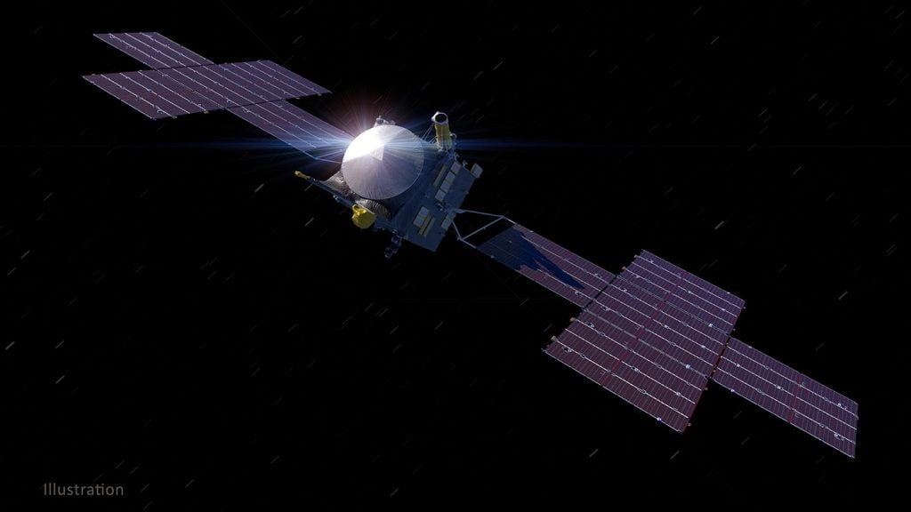
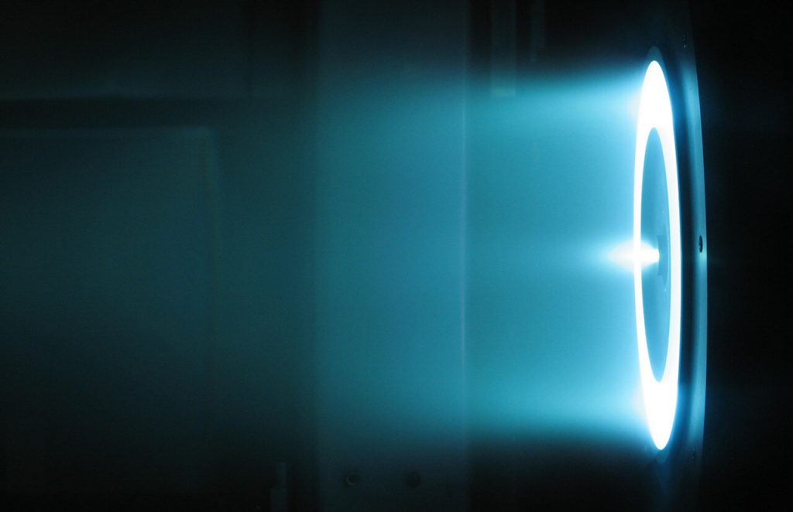
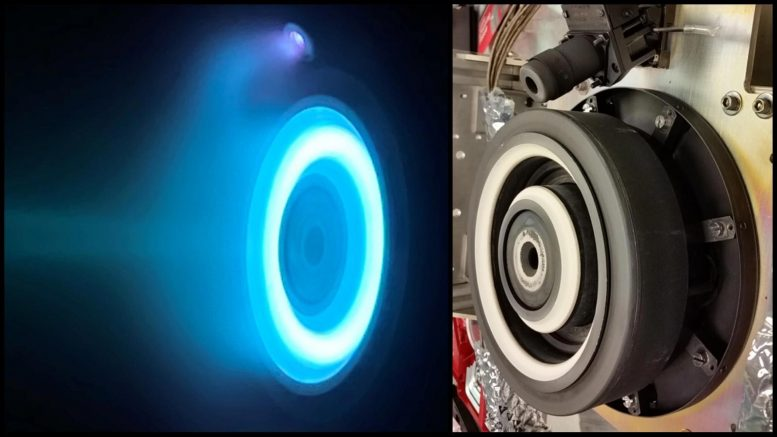
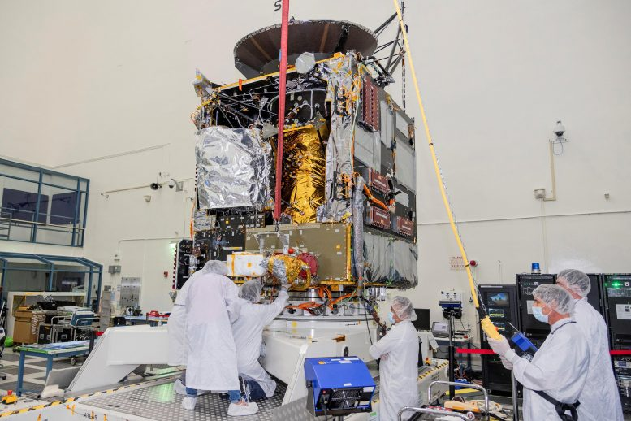
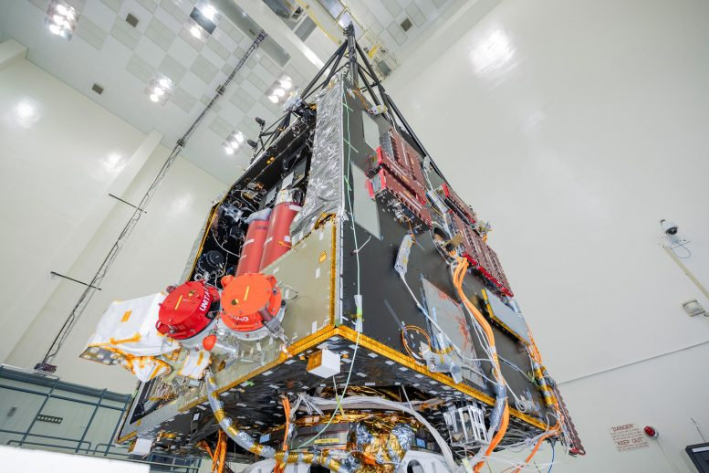
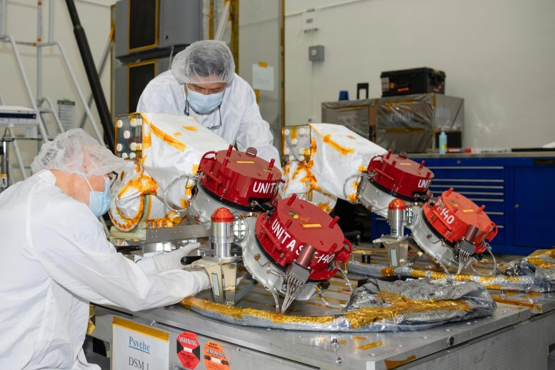
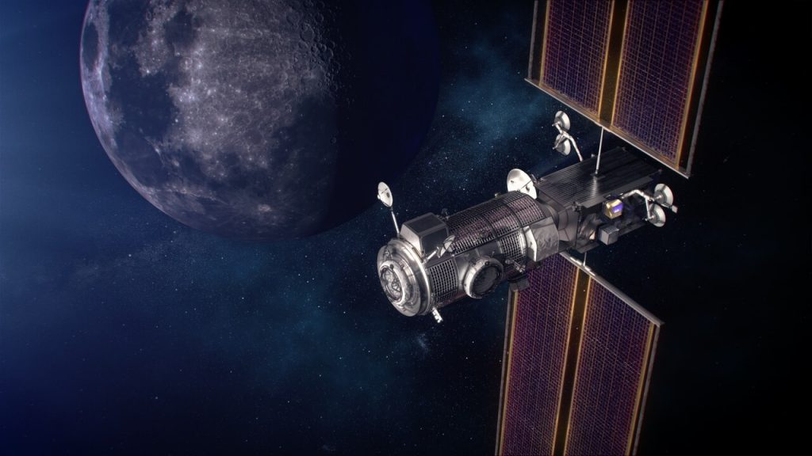

ဒီဒုံးစက်ဟာ တကယ်တော့ လျှပ်စစ်အားသုံး ဒုံးစက်ဖြစ်ပါတယ်။ ဒီဒုံးစက်အတွက် လိုအပ်မယ့် လျှပ်စစ်စွမ်းအင်ကို နေရောင်ခြည်ကနေ ရရှိမှာပါ။ ဒါဟာ အရင်က စိတ်ကူးယာဉ် သိပ္ပံ ဝတ္ထုတွေထဲက နည်းပညာ အပြင်မှာ တကယ်ဖြစ်လာတာပဲ ဖြစ်ပါတယ်။ ဒီနေရောင်ခြည် စွမ်းအင်သုံး ဒုံးစက်အင်ဂျင်ဟာ အသံငြိမ်သက်ပြီး တုန်ခါမှုလဲ နည်းသလို ဆိုက်ခီ အာကာသယာဉ်ကို သာမန် လောင်စာသုံး ဒုံးစက်အင်ဂျင်တွေထက် ပိုမိုဝေးကွာတဲ့ အရပ်တွေကို ရောက်ရှိအောင် ပို့ဆောင်ပေးနိုင်မှာ ဖြစ်ပါတယ်။
ဒီ အာကာသယာဉ်ကို ၂၀၂၂ ခုနှစ် အောက်တိုဘာမှာ လွှတ်တင်ဖို့ မူလက လျှာထားခဲ့ပါတယ်။ ဒါပေမယ့် လွှတ်တင်ဖို့ စမ်းသပ်မှုတွေ အချိန်မှီ မပြီးဆုံး တာကြောင့် လာမယ့်နှစ်မှာ လွှတ်တင်ဖို့ ပြောင်းရွှေ့ လျှာထား ခဲ့တာ ဖြစ်ပါတယ်။
လာမယ့် ၃ နှစ်ခွဲတာ ကာလအတွင်းမှာ ခရီးမိုင် သန်း ၁,၅၀၀ အကွာအဝေးကို ခြေဆန့်ပြီး နေအဖွဲ့အစည်းအတွင်းက ဂြိုလ်သိမ်တစ်ခုဆီကို ချဉ်းကပ်သွားမှာ ဖြစ်ပါတယ်။ ရည်မှန်းချက်ကတော့ ဒီဂြိုလ်သိမ်ရဲ့ ဓါတုဖွဲ့စည်းပုံနဲ့ ပါဝင်တဲ့ သတ္တုပမာဏကို လေ့လာဖို့ပဲ ဖြစ်ပါတယ်။

နေစွမ်းအင်သုံးလျှပ်စစ်ဒုံးစက်ဘယ်လိုအလုပ်လုပ်လဲ
နေစွမ်းအင်သုံး လျှပ်စစ်ဒုံးစက်တစ်လုံး ဘယ်လို အလုပ်လုပ်လဲ ဆိုတာ ပြောဖို့ဆို အရင်ဆုံး နေစွမ်းအင်ကို လျှပ်စစ်စွမ်းအင်အဖြစ် ပြောင်းပေးမယ့် ဆိုလာပြားတွေကနေ စပြောရမှာ ဖြစ်ပါတယ်။ ဒီ ဆိုလာပြားတွေက နေရောင်ခြည်ကိုဖမ်းယူပြီး လျှပ်စစ်စွမ်းအင်အဖြစ် ပြောင်းပေးပါတယ်။ ဒီလျှပ်စစ်စွမ်းအင်ကို အသုံးပြုပြီး ဒုံးစက်ကို မောင်းနှင်ပေးမှာ ဖြစ်ပါတယ်။ဒီ ယာဉ်ရဲ့ ဒုံးစက်တွေကို Hall Thruster (ဟောလ်တွန်းစက်) လို့ အမည်ပေးထားပါတယ်။ ဒီ Hall Thruster ဒုံးစက်အမျိုးအစားကို အသုံးပြုပီး လထက် ဝေးတဲ့ နေရာကို ခရီးနှင်မှာ ဒီ ဆိုက်ခီ အာကာသယာဉ်ဟာ ပထမဆုံးပဲ ဖြစ်ပါတယ်။
ဒီဒုံးစက်က လောင်ဆာ လုံးဝ မလိုတာတော့ မဟုတ်ပါဘူး။ ဒါပေမယ့် သူ့မှာ သုံးမယ့် လောင်စာက အခြားဒုံးစက်တွေလို ပေါက်ကွဲတတ်တဲ့ လောင်စာမျိုး မဟုတ်ပါဘူး။ ဇီနွန် (Xenon) လို့ခေါ်တဲ့ ပေါက်ကွဲမှု လုံးဝ မဖြစ်နိုင်တဲ့ ဓါတ်ငွေ့တမျိုးကို အသုံးပြုမှာ ဖြစ်ပါတယ်။ ဒီ ဇီနွန်ဆိုတာ မော်တော်ကား မီးလုံးကြီးတွေထဲမှာ ထည့်သွင်းအသုံးပြုတဲ့ ဓါတ်ငွေ့ပါပဲ။

ဒီ ဇီနွန်လျှပ်စစ် ဒုံးစက်တွေရဲ့ တွန်းကန်အားက တကယ်တော့ ဘယ်လောက်မှ မရှိပါဘူး။ သူ့ရဲ့ တွန်းကန်အားကို နမူနာ ယှဉ် ပြရရင် လက်ဖဝါးပေါ် အကြွေစေ့လေး တစ်စေ့ တင်ထားသလောက်ပဲ ရှိတာပါ။ ဒါပေမယ့် ဒီတွန်းကန်အားဟာ ဘာမှ ခုခံအား မရှိတဲ့ အာကာသ ဟင်းလင်းပြင်ထဲမှာ ဒီ ဆိုက်ခီ အာကာသယာဉ်ကို တစ်နာရီ မိုင် ၂၀၀,၀၀၀ (ကီလိုမီတာ ၃၂၀,၀၀၀) အမြန်နှုန်းထိ ရောက်အောင် တွန်းပို့ပေးဖို့ လုံလောက်ပါတယ်။ (ဒီ အမြန်နှုန်းက ချက်ချင်းတော့ ရောက်မှာ မဟုတ်ပါဘူး။ တဖြည်းဖြည်း အမြန်နှုန်း တက်လာပြီး ကာလ အတော်ကြာမှ ဒီအမြန်နှုန်းကို ရောက်မှာ ဖြစ်ပါတယ်)။

“၂၀၁၂ ခုနစ်မှာ ဒီအာကာသယာဉ် လွှတ်တင်ဖို့ စတင် စဉ်းစားခဲ့ကြစဉ် ကတဲက နေစွမ်းအင်သုံး လျှပ်စစ်ဒုံးစက်တွေ တပ်ဆင်ဖို့ ဆွေးနွေးခဲ့ကြတာပါ။ အကယ်လို့ ရိုးရိုး လောင်ဆာရည်သုံး ဒုံးစက်တွေနဲ့သာ ပျံသန်းရမယ်ဆို ဆိုက်ခီအနေနဲ့ ဒီခရီးကို ရောင်အောင် သွားနိုင်စွမ်း မရှိပါဘူး” လို့ ဒီစီမံကိန်းကို ဦးဆောင်တဲ့ အရီဇိုးနား တက္ကသိုလ်က (Arizona State University) သုတေသန ပညာရှင် လင်ဒီ အယ်လ်ကင် တန်တွန် (Lindy Elkins-Tanton) က ပြောပါတယ်။
“တဖြည်းဖြည်းနဲ့ ဒီ နေစွမ်းအားသုံး လျှပ်စစ်အင်ဂျင်က ဒီစီမံကိန်းရဲ့ အဓိကနေရာကို ရောက်လာပါတယ်။ ဒီ ဒုံးစက်သုံးပြီး လွှတ်တင်ဖို့ သွားမယ့် လမ်းကြောင်းတွေ တွက်ချက်ဖို့ အတွက်ကို အထူးကျွမ်းကျင် ပညာရှင်တွေပါဝင်တဲ့ အဖွဲ့ကနေ အသေးစိတ် တွက်ချက်မှုတွေ လုပ်ကြရပါတယ်။” လို့ သူမက ဆက်ပြောပါတယ်။

အာကာသခရီးရှည်
ဆိုက်ခီ အာကာသယာဉ်ကို အမေရိကန် ပြည်ထောင်စု ဖလော်ရီဒါ ပြည်နယ်မှာရှိတဲ့ ကနေဒီ အာကသစခန်းကနေ လွှတ်တင်မှာ ဖြစ်ပါတယ်။ ပထမအဆင့် အနေနဲ့ Falcon Heavy ဒုံးစက်တွေကို အသုံးပြုပြီး အင်္ဂါဂြိုလ် အနီးကို လွှတ်တင်မှာ ဖြစ်ပါတယ်။ အင်္ဂါဂြိုလ်နား ရောက်တဲ့အခါ ဂြိုလ်ရဲ့ ဆွဲငင်အားကို အသုံးချပြီး လောက်လွှဲလွှဲသလို လွှဲပြီး အရှိန်တင်ပေးမှာ ဖြစ်ပါတယ်။အခုခရီးစဉ်က ဆိုက်ခီ အာကာသယာဉ်အတွက်တော့ နဲနဲလေး ခက်ခဲမှာ ဖြစ်ပါတယ်။ ဘာလို့လဲဆိုတော့ အခုသွားမယ့် ဂြိုလ်သိမ်နဲ့ ပါတ်သက်လို့ သိပ္ပံပညာရှင်တွေ သိတာက နဲနဲလေးပဲ ရှိလို့ပါ။ ဒီဂြိုလ်သိမ်နဲ့ ပါတ်သက်လို့ သိတာသိပ်မရှိတော့ ဂြိုလ်သိမ်နားကို အာကာသယာဉ် ကပ်သွားပြီးရင် ဘာဆက်လုပ်ရမယ်ဆိုတာကို ကြိုတင်ဆုံးဖြတ်ဖို့ ခက်ခဲနေပါတယ်။

ဒီဂြိုလ်သိမ်ဆီကို ရောက်ဖို့ အချိန် ၂၁ လခန့် ကြာမြင့်မှာ ဖြစ်ပါတယ်။ ဒီ ကြားကာလမှာတော့ အာကာသယာဉ်ဟာ နေစွမ်းအင်သုံး လျှပ်စစ်ဒုံးစက်တွေရဲ့ တွန်းအားနဲ့ အာကာသတွင်း ခရီးနှင်မှာ ဖြစ်ပါတယ်။
ဒီလို လျှပ်စစ်ဒုံးစက် တပ်ဆင်အသုံးပြုတာ ဒါပထမဆုံး အာကာသယာဉ်တော့ မဟုတ်ပါဘူး။ ၁၉၉၈ ခုနှစ်က လွှတ်တင်ခဲ့တဲ့ Deep Space 1 အာကာသယာဉ်မှာလဲ အလားတူ ဒုံးစက်တစ်မျိုး တပ်ဆင်ခဲ့ ဖူးပါတယ်။ နောက်ပြီး ဂြိုလ်သိမ်တွေ ဖြစ်တဲ့ Vesta နဲ့ Ceres တို့ကို လေ့လာဖို့ လွှတ်တင်ခဲ့တဲ့ (Dawn အာရုဏ်) မှာလဲ ဒါမျိုး အင်ဂျင် တပ်ဆင် ပျံသန်းခဲ့တာပါ။ ဒီ Dawn အာကာသယာဉ်ဟာ ၁၁ နှစ်ကြာအောင် အလုပ်လုပ်ခဲ့ပြီး နောက်ဆုံး ၂၀၁၈ မှာ ဖြည့်ထားတဲ့ ဓါတ်ငွေ့ကုန်သွားလို့ ရပ်ဆိုင်းခဲ့ရပါတယ်။ ဒီ Dawn အာကာသယာဉ်ကတော့ ဇီနွန်ဓါတ်ငွေ့ကို အသုံးပြုတာ မဟုတ်ပဲ ဟိုက်ဒရာဇင်း (Hydrazine propellant) ကို အသုံးပြုထားတာ ဖြစ်ပါတယ်။

အခုလို နေစွမ်းအင်သုံး လျှပ်စစ်အင်ဂျင်တွေကို အသုံးပြုခြင်းအားဖြင့် နောင်အနာဂါတ်ကာလမှာ အင်္ဂါဂြိုလ်နဲ့ သူ့ထက်ပိုဝေးတဲ့ နက်ရှိုင်းတဲ့ အာကာသ ခရီးရှည်တွေအတွက် အထောက်အကူ ဖြစ်လာလိမ့်မယ်လို့ ဒီအင်ဂျင် တီထွင်တဲ့ နည်းပညာ ရှင်များက ယုံကြည်လျှက် ရှိကြပါတယ်။
